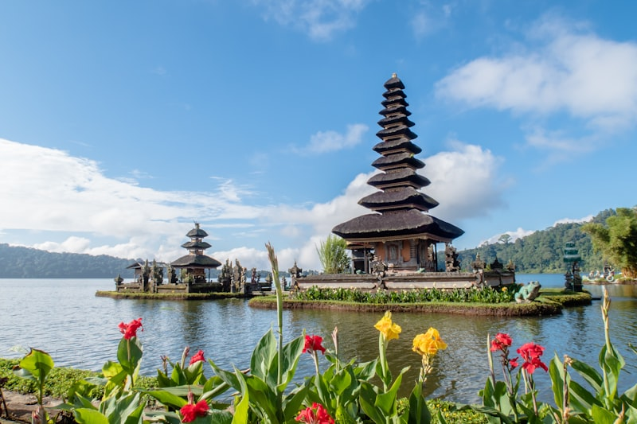
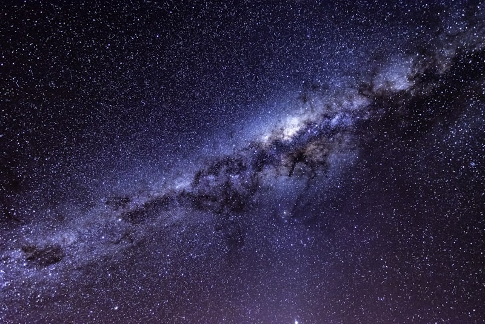
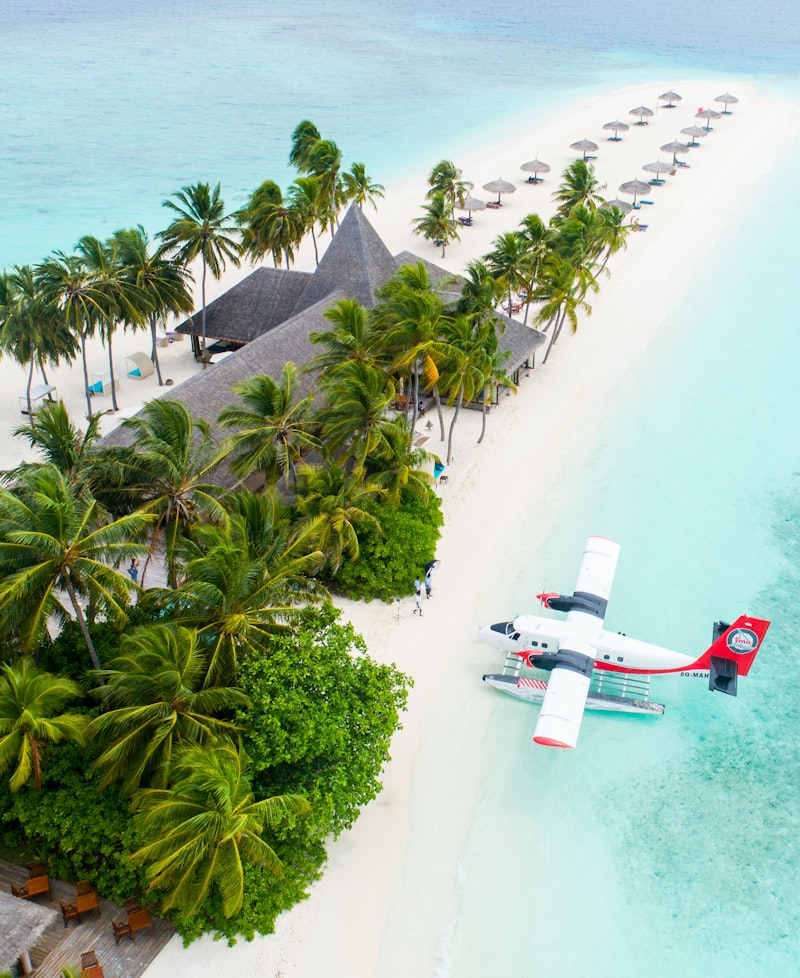
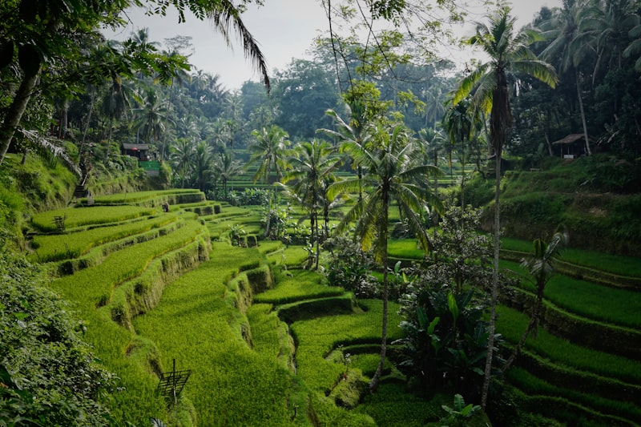
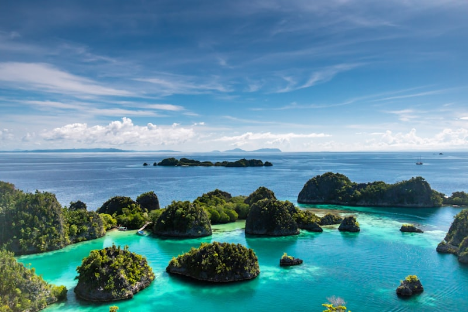

- All
- Calderas
- Mountains
- Lava Flows
- Others

Kaldera Batur I
Kaldera (Calderas)

Kaldera Batur II
Kaldera (Calderas)

Kerucut I G. Batur
Kerucut Gunung Api & Pegunungan

Kerucut II G. Batur
Kerucut Gunung Api & Pegunungan

Kerucut III G. Batur
Kerucut Gunung Api & Pegunungan

Gunung Abang
Kerucut Gunung Api & Pegunungan

Gunung Payang
Kerucut Gunung Api & Pegunungan

Sinder Sampeanwani
Kerucut Gunung Api & Pegunungan

Gunung Bunbulan
Kerucut Gunung Api & Pegunungan

Sinder Yehmampeh
Kerucut Gunung Api & Pegunungan

Bukit Puraknya
Bentang Alam Lainnya
Lava 1849
Formasi Aliran Lava (Lava Flows)
Lava 1888
Formasi Aliran Lava (Lava Flows)
Lava 1904
Formasi Aliran Lava (Lava Flows)
Lava 1905
Formasi Aliran Lava (Lava Flows)
Lava 1921
Formasi Aliran Lava (Lava Flows)
Lava 1926
Formasi Aliran Lava (Lava Flows)
Lava 1963
Formasi Aliran Lava (Lava Flows)
Lava 1968
Formasi Aliran Lava (Lava Flows)
Lava 1974
Formasi Aliran Lava (Lava Flows)
Danau Batur
Bentang Alam Lainnya
Want to Learn More About Batur UNESCO Global Geopark?
Discover official geological research, conservation programs, and guided tours.
Visit Official UNESCO Geopark Website